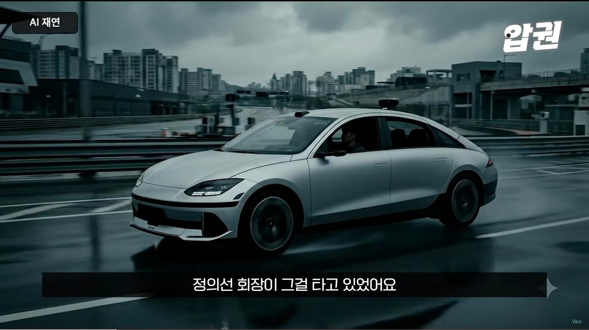
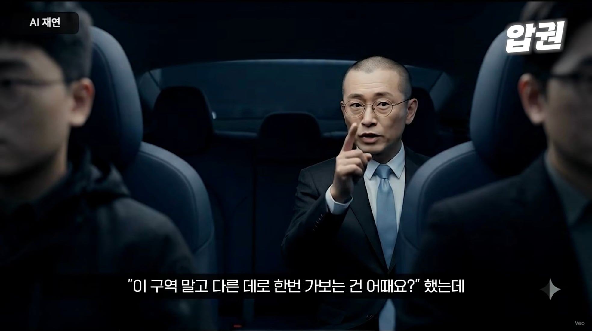
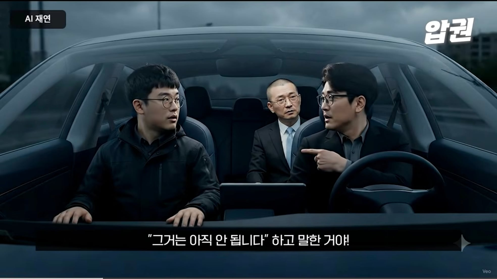

현대 자율주행 차량 시승중....



현대 자율주행 차량 시승중....
?? : 중국꺼 사서 쓰죠
이썰이 아트리아? 얼마전에 뜬거 이후 얘기임?
송창현 있을때
아 의선이형 좀 어떻게좀 해봐 내 현차 주식이 시퍼렇다고!!!
저새끼들은 어떻게든 자기들이 우월한건 존나 과대포장해야하고
자기네들 후달리는건 까내려야하는 새끼들이라 ㅋㅋㅋ
기업들이 뭐 다 비슷비슷하지만서도
그러니 글로벌 정보가 딸깍으로 들어오는 이 시대에 아직까지도 정신못차리고
FSD는 완벽하지 않다 어쩐다 어떻게든 까내리려고 하고
전 세계적으로 뭐 방향성을 떠나서 자기들이 선도하고있는 수소차같은거
어떻게든지 올려치기하려고 언플 존나 하잖아 ㅋㅋㅋㅋㅋ 정작 지들도 넥쏘 한대면서
솔직히 아트리아 영상 보고 작년에 깐 42닷 다시 가고싶어졌음 쩝
근데 이새끼들 연봉테이블 스타트업보다 낮아서 당황함. 미친놈들아 진짜 42닷에 자율주행 몰아줄꺼면 42닷을 현대 최고연봉 회사로 만들어야지;;;
동감함, 데리고 있는 애들 저기 갈까 고민하는거 상담해줬는데 생각보다 연봉이 너무 짜더라.
이러니 서자취급받고 1티어 개발자들이 못가지...
물론 여기도 아트리아 만드는 핵인들한테는 섭섭치않게 주기야 하겠다만, 그래도 전반적인 다른 엔지니어들 연봉이 넘 짜더라.
연봉책정할때 어떤 고민이 들어갔는지는 알거 같은데...그래도 나름 명운을 건 코어 TF 성격인데 좀더 챙겨주면 좋을거 같다는 생각이 들었음.
ㄹㅇㅋㅋㅋ
자율주행 아닌 IC4가 대략 1.3억이 천장일텐데
더 많이주는데가 많다보니..
거기서 IC4면 어느레벨임? 쿠팡식 레벨4는 아닐거고...
42닷 연봉이 현차보다 낮음??
levels.fyi 보고왔는데 연봉 심각하네
현차보다 낮을거같다...
으잉 거기서 한국기업 연봉도 나왔어????? 개꿀팁ㄱㅅ
딱봐도 규칙기반으로 짯나보네
사기지 뭐
한화였다면 무슨 일이 일어났을지 끔찍하군
청계산으로~
ㅋㅋㅋ보스턴 다이내믹스도 비슷한 수준이던데
이번에 광주에서 200대자율차도입한다고 해서 국토부에서 국내회사 자율차 역량평가 했는데 현대차가 꼴지함 ㅋㅋㅋㅋ 국내 중소 스타트업에도 밀리는수준이라는거지.
카카오도 자율택시한다고 하던데 현대는 한국인 인재관리 잘해야할듯.
뭐 어쩌겠어 틈만나면 파업한다는데 일 제대로 하겠음?
파업이 문제가 아닌게 자율주행 기술개발에 몇년간 밑빠진 독에 돈부어가면서 투자했는데 돌아오는 말이
"중국차 쓰시죠" 였음ㅋㅋ
자율 주행쪽은 사업부가 다름
파업은 한적 없지만 실력이...ㅋㅋㅋ
자율주행을 옵션으로 넣었놓고 데이터 수집은 어떻게 할건데
그게 사실이라면 자기 잘못 아닌가? 누워서 침뱉기 아닌가?
전기차 하드웨어는 1류 소프트웨어는 2,3류
1류라 불남..?
불이야 다 나는거고 전기차 몸체는 현기가 젤 잘하는거 맞음
근거가 뭐임?
걍 차가 제일 좋음
전기 n시리즈 가성비 개쩔게 뽑는거만 봐도 현시점에 현기 따라갈 수 있는 하드웨어 만들수 있는 회사가 없음
현기가 원래 그렇게 좆밥회사도 아닌데다가 전자제품 공급망이 잘 되어있는 나라라 그런지 퀄리티가 잘 뽑혀나옴
불나는건 모든전기차 공통이고
전기차 배터리 컨트롤 기술은 아5n이 뉘르부르크닝에서 입증하지 않았나
전기차에서 제일 중요한 배터리 관리기술이 제일좋음. SOH만봐도 타회사보다 좋지만 회사마다 기준이 달라 불공정하다 생각할수있다면 그외 고방전상황에서 출력 유지력이라던가 배터리 온도제어가 좋음
사전에 입력된 정해진 루트만 다니면 그게 자율주행이 맞나.....
근데 현대차 치고는 엄청나게 느리네... 모르는 사람이 봐도 뭔가 안돌아 가는 느낌이 확들어. 택시용으로 파는 깡통차 세일즈 할때 여기에 카메라달고 1년만 다녀주면 차값에서 00원 차감해 주겠다. 이런식으로 주행거리가 많은 차들 대상으로 비젼정보 수집한 다음에 계속 축척시켜서 학습 시키고 만들면 되는거 아닌가
시발 택시의 주행을 학습한 자율주행?
도로를 얼마나 더 지옥으로 만들 생각이냐?
그걸 잘 아는사람이 사장으로 온지 6개월됨 ㅠ....
진짜 뼈아픈 몇년이었다. 보니깐 네이버에서도 평 안좋았던데 왜 그런인간을....
ㅋㅋ
이게 진짜 AI 자율 주행이지
어딜 인간이 목적지를 정하려고
투자 존나 했을텐데 결과보고 존나 빡치긴했을듯
이새끼들은 차값 올리고 옵션 장난질 치는거말곤 잘 하는게 뭐임ㅋㅋㅋ
중국거 사다 쓰죠 그걸로 몇년을 뭉개놔서
매크로자나 ㅋㅋㅋㅋㅋ